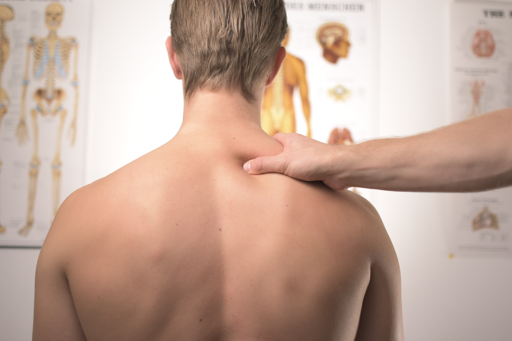

What causes chronic pain ?
Chronic pain is defined as pain that lasts at least 12 weeks and can occur in nearly any part of your body.
By Erica Cirino

Chronic pain is usually caused by an initial injury, such as a back sprain or pulled muscle. It’s believed that chronic pain develops after nerves become damaged. The nerve damage makes pain more intense and long lasting. In these cases, treating the underlying injury may not resolve the chronic pain.
In some cases, however, people experience chronic pain without any prior injury. The exact causes of chronic pain without injury aren’t well understood. The pain may sometimes result from an underlying health condition, such as:
chronic fatigue syndrome: characterized by extreme, prolonged weariness that’s often accompanied by pain
endometriosis: a painful disorder that occurs when the uterine lining grows outside of the uterus
fibromyalgia: widespread pain in the bones and muscles
inflammatory bowel disease: a group of conditions that causes painful, chronic inflammation in the digestive tract
interstitial cystitis: a chronic disorder marked by bladder pressure and pain
temporomandibular joint dysfunction (TMJ): a condition that causes painful clicking, popping, or locking of the jaw
vulvodynia: chronic vulva pain that occurs with no obvious cause
Who is at risk for chronic pain?
Chronic pain can affect people of all ages, but it’s most common in older adults. Besides age, other factors that can increase your risk of developing chronic pain include:
-having an injury
-having surgery
-being female
-being overweight or obese
How is chronic pain treated?
The main goal of treatment is to reduce pain and boost mobility. This helps you return to your daily activities without discomfort.
The severity and frequency of chronic pain can differ among individuals. So doctors create pain management plans that are specific to each person. Your pain management plan will depend on your symptoms and any underlying health conditions. Medical treatments, lifestyle remedies, or a combination of these methods may be used to treat your chronic pain.
Medications for chronic pain
Several types of medications are available that can help treat chronic pain. Here are a few examples:
over-the-counter pain relievers, including acetaminophen (Tylenol) or nonsteroidal anti-inflammatory drugs (NSAIDs) such as aspirin (Bufferin) or ibuprofen (Advil).
opioid pain relievers, including morphine (MS Contin), codeine, and hydrocodone (Tussigon)
adjuvant analgesics, such as antidepressants and anticonvulsants
Medical procedures for chronic pain
Certain medical procedures can also provide relief from chronic pain. An example of a few are:
electrical stimulation, which reduces pain by sending mild electric shocks into your muscles
nerve block, which is an injection that prevents nerves from sending pain signals to your brain
acupuncture, which involves lightly pricking your skin with needles to alleviate pain
surgery, which corrects injuries that may have healed improperly and that may be contributing to the pain
Lifestyle remedies for chronic pain
Additionally, various lifestyle remedies are available to help ease chronic pain. Examples include:
- physical therapy
- tai chi
- yoga
- art and music therapy
- pet therapy
- psychotherapy
- massage
- meditation
Dealing with chronic pain
There isn’t a cure for chronic pain, but the condition can be managed successfully. It’s important to stick to your pain management plan to help relieve symptoms.
Physical pain is related to emotional pain, so chronic pain can increase your stress levels. Building emotional skills can help you cope with any stress related to your condition. Here are some steps you can take to reduce stress:
Take good care of your body: Eating well, getting enough sleep, and exercising regularly can keep your body healthy and reduce feelings of stress.
Continue taking part in your daily activities: You can boost your mood and decrease stress by participating in activities you enjoy and socializing with friends. Chronic pain may make it challenging to perform certain tasks. But isolating yourself can give you a more negative outlook on your condition and increase your sensitivity to pain.
Seek support: Friends, family, and support groups can lend you a helping hand and offer comfort during difficult times. Whether you’re having trouble with daily tasks or you’re simply in need of an emotional boost, a close friend or loved one can provide the support you need.